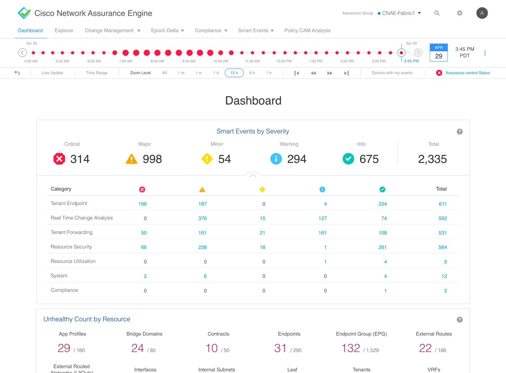
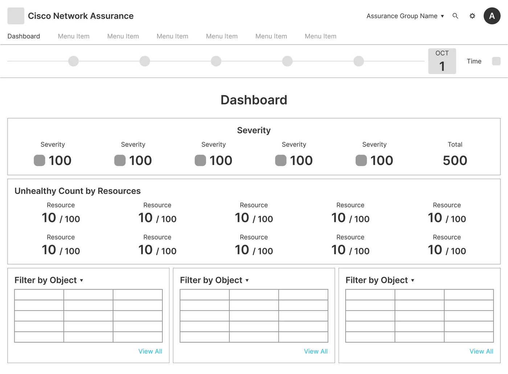
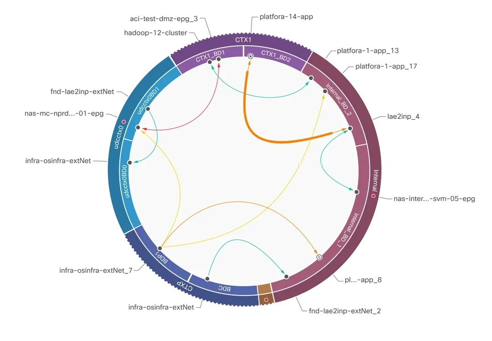
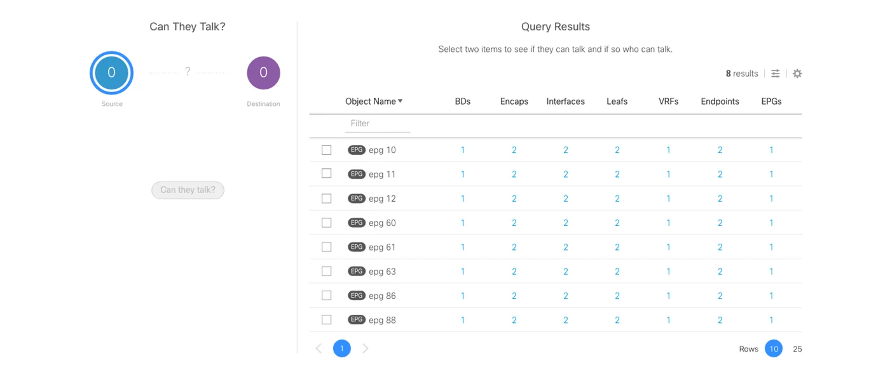
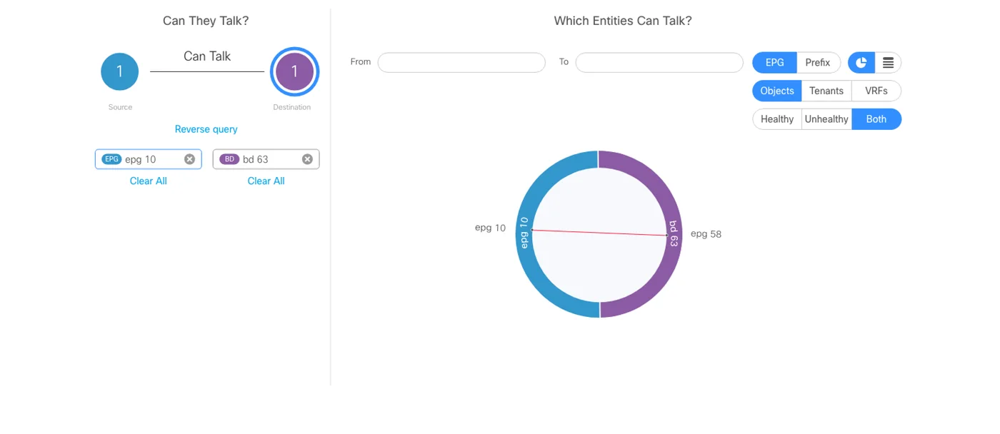
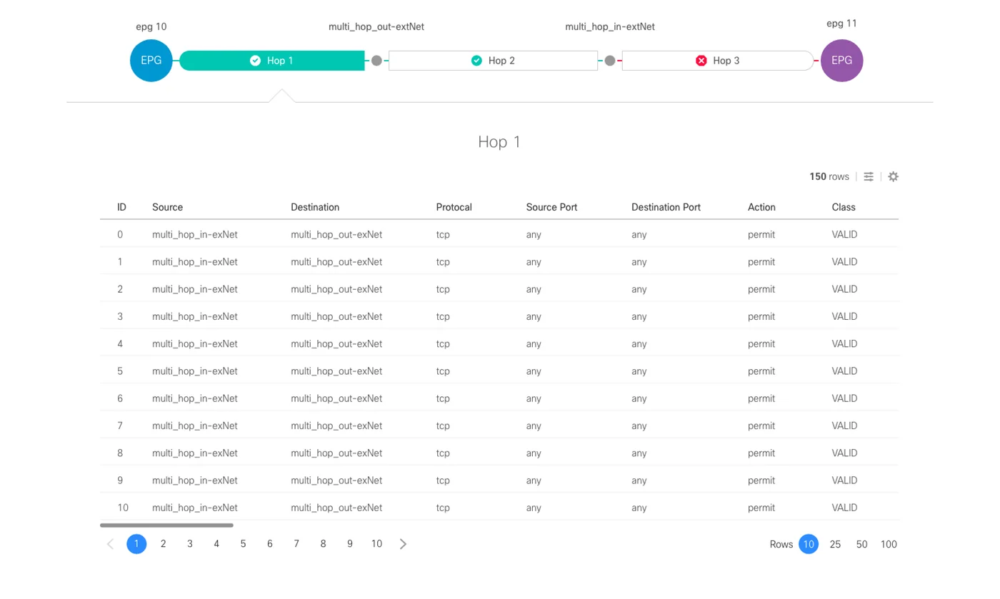
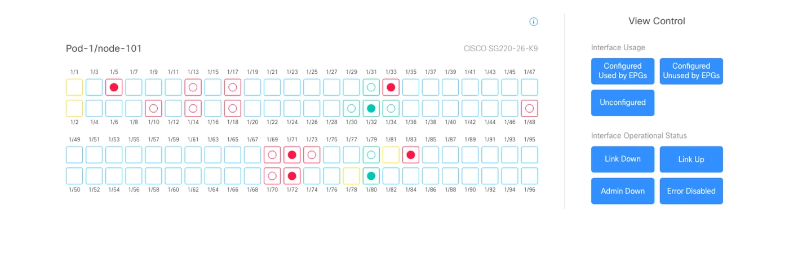

The Challenge
Too much data, not enough signal.
As the founding product designer, my mandate was to turn a disjointed set of engineering-led verification features into one cohesive enterprise application.
The core challenge was data density. The backend generated massive streams of algorithmic network data, so the interface was always at risk of drowning in noise. I defined the product architecture from scratch, then designed the filtering workflows and layouts that let operators cut through that noise and target a specific network error with precision and speed.
Scattered features
Engineering had built verification features one by one, with no product around them.
Dense, noisy data
The backend streamed huge volumes of algorithmic network data that buried the errors that mattered.
Errors hard to pin down
Operators had to reach one specific network error with precision and speed, not wade through everything around it.
The Solution
Make time the way in.
I created a visualization framework that turns complex network validation logic into an interactive dashboard built around a timeline.
To track network health over time, I introduced a patented navigation interface based on time epochs. Operators pivot between historical and real-time network states and isolate exactly when an error occurred.
Custom data visualization components sit on top of that timeline. They let administrators slice complex datasets with ease, speed up troubleshooting and surface a clear path to fixing each anomaly.
Time as the way in
A patented navigation model based on time epochs lets operators move between past and real-time network states.
The exact moment
Operators isolate when an error occurred instead of searching through everything that happened.
A clear path to the fix
Custom visualization components slice complex data, speed up troubleshooting and point to remediation.
Discovery
Learn the network before drawing it.
We started with collaborative workshops alongside Cisco IT, technical marketing and product management to map core user needs and technical constraints.
Going deep on Cisco ACI and its network objects showed me how operators actually work with the system. Instead of just listing requests, I could see where isolated network layers failed to connect, and which ways of presenting the data would work best.
Ideation
Scope and structure first.
Ideation turned what we learned in discovery into a scalable structure and navigation model. I wireframed the framework to show exactly how operators would move between complex assurance views without losing their place.
That exploration let the team cross-check feature priorities for the first release and settle the site map before high-fidelity design began.
Wireframe to Final
The dashboard, from structure to final design. Drag the handle to compare.


Key Screens
Time, relationships, questions, focus.
Time-Epoch Navigation
I introduced a patented timeline as the main way to move through the application. It tracks network state and health over time, and flags issues at the exact moment they happen.
Because the timeline is tied directly to the backend logic, operators can step through past states, compare health across intervals and find the moment a configuration diverged. Troubleshooting gets much faster.
Hover a detail to find it on the screen
Visualizing Network Dynamics
This view turns dense configuration tables into an interactive map of network objects and the paths they use to communicate. I set the visual hierarchy so communication violations and security policy discrepancies come before routine operational data.
Operators get a direct, scannable mental model: they can judge threat severity, manage compliance and verify the rules that are active.
Hover a detail to play that step

- Subjectsubj-udp-syslog
- Filterfilt-dst-syslog-filter
- dst-udp-syslogudp, dport 514
- dst-tcp-syslogtcp, dport 514
- Subjectsubj-syslog-API
- Filterfilt-udp-rpc
- dst-udp-889udp, dport 889
- Filterfilt-dst-tcp-filter
- dst-tcp-8089tcp, dport 8089
- dst-tcp-9997tcp, dport 9997
Natural Language Queries
To make dense infrastructure data easier to question, I designed a search built on natural language. Queries start from four operational intents: What, Can, How and View.
Each predictive selection becomes a precise visualization, so operators uncover asset dependencies without writing custom syntax.
Discover assets and their object associations.




Advanced Filtering Controls
To keep dense network fabrics from overwhelming operators, I designed one multi-layered filtering architecture. Operators narrow huge datasets by specific technical parameters, find the exact point of failure and troubleshoot just that.
Because it is one consistent pattern, high-density controls stay predictable on every main dashboard.
Select a leaf above to see associated policies
Associated Policies for rtp1-ae07-fab1-sw1011
High-Fidelity Delivery
From validated flows to a shipped product.
The last phase turned validated user flows into production-ready interface specifications. I set up a visual system that standardized component behavior, high-density data palettes and interactive states, so the application stays consistent.
To connect design strategy with execution, I worked closely with engineering through implementation and gave the team a clear development roadmap for a smooth, high-quality release.
Component Library
Specs built for dense data.
To support the application’s dense data, I defined a standard library of specialized UI components and interaction patterns. That included a semantic color system for critical network status alerts, and reusable high-density components like interactive data tables and layout grids.
These structured specs gave engineering a predictable framework that kept the app visually consistent and sped up implementation across the product.
- Critical
- Major
- Minor
- Warning
- Info

Marketing and Partner Video Production
For our partner presentations at CiscoLive!, I led end-to-end production of high-fidelity video use cases, from concept to illustration and animation. Working with product managers and designers, I tied the story to our main product goals so the motion graphics made the product’s technical value clear.
What Changed
One application
Scattered verification features became one cohesive enterprise application.
Time as navigation
A patented epoch timeline lets operators find the moment an error occurred.
Problems first
Violations and policy discrepancies rank above routine data in the relationship view.
Questions, not syntax
Natural language queries replace custom programmatic syntax.
One filtering pattern
The same multi-layered filters work the same way on every main dashboard.
Built to ship
Production specs and a component library carried the product to a stable release.
Start with when. The why follows.
Scale, Execution and Technical Milestones
This project showed how product design can carry complex enterprise software from inception to a stable production deployment. Tight timelines meant constantly balancing system-level requirements with practical engineering constraints.
The result gave a highly technical audience an intuitive way to work, and set defensive design patterns that protect the core visualization frameworks as unique intellectual property.
Epoch Data Interface
US Patent 10,616,072, issued April 7, 2020
Techniques and Interfaces for Troubleshooting Datacenter Networks
US Patent 10,904,070, issued January 26, 2021
US Patent 11,805,004, issued October 31, 2023
Send me a message
Tell me a little about what you have in mind, and I’ll reply by email.
Thanks, your message is on its way.
I’ll get back to you soon.